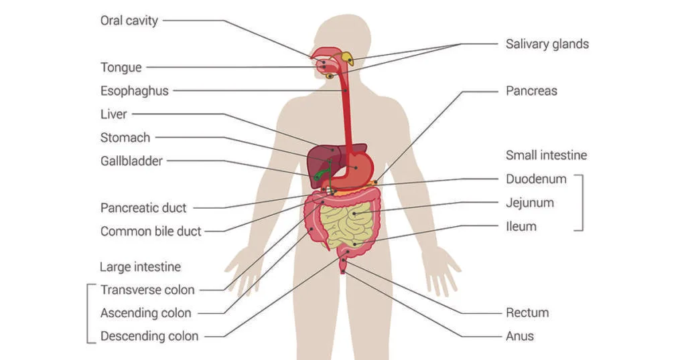
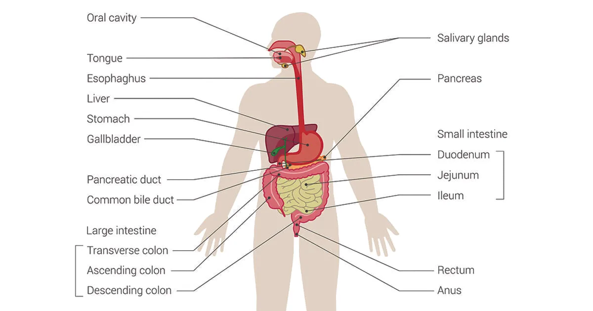
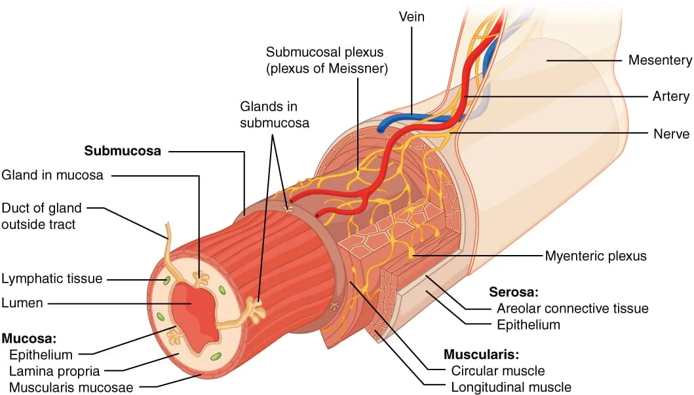

Expanded Nursing Uganda Explanation
Digestive system should be reviewed through safe maternal and newborn assessment, early recognition of danger signs, respectful communication and timely referral. Connect the definition to vital signs, bleeding, fetal or newborn wellbeing, patient education and local protocol requirements.
Contents — 36 sections (tap to expand)
01 I. Introduction
Definition: The digestive system is a system of the body responsible for breaking down food into forms that can be absorbed and used by body cells.
Key Processes: It also absorbs water, vitamins, and minerals, and eliminates undigestible wastes from the body.
Digestion: The process of breaking down the larger molecules present in food into molecules that are small enough to enter body cells.
Digestive System Structure: The organs involved in the breakdown and processing of food are collectively called the digestive system. It is essentially a tubular system, also known as the alimentary canal or gastrointestinal (GI) tract , which extends from the mouth to the anus.
Think of the digestive system as the body's food processing factory. Its main job is to break down the food we eat into tiny particles that the body can absorb and use for energy, growth, and repair. Waste material that cannot be absorbed is then eliminated from the body.
02 Main Parts:
The digestive system includes:
- The alimentary canal (or digestive tract): This is a long, continuous tube that starts at the mouth and ends at the anus. Food passes through this tube.
- Accessory organs: These are organs and glands located outside the alimentary canal that produce substances (like enzymes and bile) that help with digestion.
03 The Alimentary Canal (The Food Tube)
The alimentary canal is like a long, winding pipeline through the body, from the mouth to the anus. While different parts of the tube have special jobs, they share a basic structure with four main layers in their walls:
- Outer layer ( Adventitia or Serosa ): This is the protective outer covering. In most parts of the abdomen, this is a smooth membrane called the serosa (part of the peritoneum) that allows organs to move smoothly against each other. In other parts (like the oesophagus in the chest), it's a fibrous layer called the adventitia that helps anchor the tube to surrounding structures.
- Muscle layer: This layer contains smooth muscle that helps move food through the tube. The muscle fibres are arranged in different directions (circular and longitudinal) to create wave-like contractions called peristalsis . Peristalsis pushes food along the tube, like squeezing a tube of toothpaste. This layer also forms thickened rings called sphincters at certain points, which act like valves to control the movement of food and prevent backflow.
- Submucosa: This layer is under the muscle layer. It's made of connective tissue that provides support for the lining (mucosa). It contains blood vessels (to carry away absorbed nutrients), lymphatic vessels (for fluid balance and carrying absorbed fats), and nerves that help control muscle activity and secretions.
- Inner layer ( Mucosa ): This is the lining of the alimentary canal that comes into contact with food. It is often made of epithelial tissue specialized for absorption (taking in nutrients) and secretion (producing mucus and digestive juices). The surface is sometimes folded into villi and microvilli (tiny finger-like projections) in the small intestine to greatly increase the surface area for absorption. It also contains glands that secrete mucus (to lubricate and protect the lining) and digestive juices.
04 II. Divisions of the Digestive System
The digestive system is divided into two main parts:
05 The Gastrointestinal (GI) Tract (Alimentary Canal):
A continuous tube that extends from the mouth to the anus. The term "alimentary" relates to nourishment.
Organs of the GI tract include:
- The Mouth
- Most of the Pharynx
- The Esophagus
- The Stomach
- The Small Intestine
- The Large Intestine
- The Anal Canal (implied as the end of the GI tract, part of Large Intestine section)
06 The Accessory Digestive Organs:
These organs assist in the physical and chemical breakdown of food but do not form part of the continuous GI tract tube.
They include:
- The Teeth (aid in physical breakdown)
- The Tongue (assists in chewing and swallowing)
- The Salivary Glands (produce secretions)
- The Liver (produces secretions, other functions)
- The Gallbladder (stores secretions)
- The Pancreas (produces secretions)
Teeth and tongue have direct contact with food, aiding mechanical processes. The other accessory organs produce secretions that enter the GI tract to aid chemical digestion but do not directly contact the food themselves within these organs.
07 Specific Organs of the Alimentary Canal
Food travels through these organs in order:
08 Mouth:
This is where digestion begins. Food is taken in ( ingestion ).
- Teeth: Mechanically break down food by chewing ( mastication ), making it smaller and easier to swallow.
- Tongue: Helps mix food with saliva, forms the food into a ball ( bolus ), and pushes the bolus to the back of the mouth for swallowing.
- Salivary Glands (Accessory Organs): Secrete saliva into the mouth. Saliva moistens food and contains enzymes that start breaking down carbohydrates.
09 Pharynx (Throat):
This is a passageway for both food and air.
When you swallow, a reflex action happens. A flap called the epiglottis covers the opening to the airway (larynx/trachea), ensuring food goes down the correct tube (the oesophagus) and not into the lungs.
10 Oesophagus (Food Pipe):
A muscular tube that connects the pharynx to the stomach.
- Food is moved down the oesophagus by peristalsis (wave-like muscle contractions).
- It has sphincters at the top (upper oesophageal sphincter) and bottom ( cardiac or lower oesophageal sphincter ) that act like valves to control food entry into the stomach and prevent stomach contents from coming back up.
Function: To transfer the bolus (swallowed food mass) from the mouth/pharynx to the stomach. It secretes mucus for lubrication but does not produce digestive enzymes or perform absorption.
11 Stomach:
A 'J' shaped muscular bag.
Function: Stores food temporarily, mixes food with powerful digestive juices (gastric juice), and continues chemical digestion (especially of proteins).
- The muscle layer of the stomach has three directions of fibres, allowing it to churn and mix food very effectively.
- Food mixed with gastric juice becomes a semi-liquid mixture called chyme .
- The pyloric sphincter at the bottom of the stomach controls the release of small amounts of chyme into the small intestine at a time.
12 Small Intestine:
A long, narrow tube (about 5-6 metres long) where most chemical digestion is completed and most nutrient absorption happens.
- It's divided into three parts: duodenum, jejunum, and ileum.
- The lining is covered in villi and microvilli (tiny finger-like projections) that create a huge surface area for absorption – like having a very large net to catch nutrients.
- Digested nutrients (like sugars, amino acids, fatty acids, glycerol) pass through the villi lining into the blood capillaries (for sugars, amino acids) and lymphatic vessels (for fats) within the villi.
- Receives digestive juices from the pancreas and liver/gall bladder.
13 Large Intestine:
A wider tube (about 1.5 metres long) connecting the small intestine to the anus.
- It's divided into parts: caecum (with the appendix), colon (ascending, transverse, descending, sigmoid), rectum , and anal canal (with sphincters).
- Function: Primarily absorbs water from the remaining indigestible food material, making the waste more solid. It also absorbs some salts and vitamins produced by bacteria living here.
- Bacteria living normally in the large intestine help break down some materials and produce certain vitamins (like vitamin K).
14 Accessory Organs (The Digestive Helpers)
These organs produce substances that help the alimentary canal:
- Salivary Glands: (Already mentioned with the mouth). Produce saliva for moistening and initial carbohydrate digestion.
- Pancreas: Located behind the stomach. It has two main roles: Digestive Role (Exocrine): Produces pancreatic juice, which contains powerful enzymes that digest carbohydrates, proteins, and fats. This juice is sent through a duct to the duodenum (first part of the small intestine).
- Endocrine Role: Produces hormones like insulin and glucagon, which control blood sugar levels. These hormones go directly into the bloodstream, not into the digestive tract. (We covered this in the endocrine system section).
- Liver: The largest internal organ, located in the upper right abdomen. It has many functions, but its digestive role is crucial: Digestive Role: Produces bile. Bile is a fluid that helps the small intestine digest and absorb fats. It works by breaking large fat globules into smaller droplets (like dish soap breaking up grease), which enzymes can then work on.
- Gall Bladder: A small sac located under the liver. Function: Stores and concentrates bile produced by the liver. When fatty food enters the small intestine, the gall bladder squeezes and releases bile into the duodenum through the bile ducts.
- Bile Ducts: The tubes that carry bile from the liver to the gall bladder and from the gall bladder to the duodenum.
15 The Process of Digestion and Absorption
Digestion is a step-by-step process:
- Mouth: Food enters, mechanically broken down by teeth, mixed with saliva (starts carb digestion), formed into bolus.
- Pharynx: Bolus is swallowed down.
- Oesophagus: Bolus moves down by peristalsis.
- Stomach: Food is stored, mixed with gastric juice (starts protein digestion), becomes chyme.
- Small Intestine: Chyme receives pancreatic juice (digests carbs, proteins, fats) and bile (helps digest fats). Most chemical digestion finishes here. Nutrients are absorbed into the blood and lymph through the villi. Water is also absorbed.
- Large Intestine: Indigestible material remains. Most water is absorbed, making waste solid. Bacteria work on remaining material. Waste is stored.
- Rectum & Anal Canal: Waste (faeces) is stored in the rectum and eliminated from the body through the anal canal (elimination).
Role in Metabolism: The nutrients absorbed from the digestive system are transported to all body cells. Cells use these nutrients in metabolism (all the chemical reactions in the body) to produce energy needed for all cell activities, and to build and repair body structures.
16 III. Functions of the Digestive System
The digestive system performs six primary functions:
- Ingestion: Taking foods and liquids into the mouth (eating).
- Secretion: Cells within the walls of the GI tract and accessory digestive organs secrete about 7 liters of water, acid, buffers, and enzymes into the lumen (inside space) of the tract daily. These secretions aid in the digestion of food.
- Mixing and Propulsion: Alternating contractions and relaxations of the smooth muscle in the walls of the GI tract mix food and secretions and propel them toward the anus. This movement is called motility.
- Digestion: The process of breaking down food. Mechanical digestion: Physical breakdown of food into smaller pieces (e.g., chewing by teeth, churning by stomach muscles, segmentation in the small intestine).
- Chemical digestion: Splitting of large carbohydrate, lipid, protein, and nucleic acid molecules in food into smaller molecules by hydrolysis, catalyzed by digestive enzymes. Vitamins, ions, cholesterol, and water do not require chemical digestion before absorption.
- Absorption: The passage of ingested and secreted fluids, ions, and the products of digestion (small molecules) into the epithelial cells lining the lumen of the GI tract, and then into the blood or lymph for circulation to body cells.
- Defecation: Elimination from the body of wastes, indigestible substances, bacteria, cells sloughed from the GI tract lining, and unabsorbed digested materials. The eliminated material is called feces.
17 IV. Layers of the GI Tract
The wall of the GI tract, from the esophagus to the anal canal, has the same basic structure, composed of four layers of tissues (from deep to superficial, i.e., from the lumen outwards):
- Mucosa: The inner lining of the GI tract. Subdivided into 3 layers: Epithelium : Directly lines the lumen. May be simple columnar (mostly for secretion and absorption) or stratified squamous (in areas subject to abrasion like mouth, esophagus, anus, for protection). Secretes mucus and fluid.
- Lamina propria : A layer of areolar connective tissue beneath the epithelium. Contains many blood and lymphatic vessels (for absorbing and transferring nutrients), and mucosa-associated lymphatic tissue (MALT) containing immune cells (lymphocytes, macrophages) that protect against disease by monitoring pathogens entering the GI tract.
- Muscularis mucosae : A thin layer of smooth muscle fibers. Its contractions cause local movements of the mucosa, creating small folds that increase surface area in areas like the stomach and small intestine to enhance digestion and absorption.
- Submucosa: Layer of areolar connective tissue that binds the mucosa to the muscularis. Contains many blood and lymphatic vessels that receive absorbed food molecules. Also contains the submucosal plexus (plexus of Meissner), an extensive network of neurons (part of the enteric nervous system, ENS) that regulates secretions and controls the muscularis mucosae.
- Muscularis ( Muscularis externa ): Composed of smooth muscle in most of the GI tract, though skeletal muscle is found at the beginning (mouth, pharynx, upper esophagus, external anal sphincter) and end (external anal sphincter). Skeletal muscle allows for voluntary swallowing and defecation. Smooth muscle contractions (peristalsis and segmentation) help break down food, mix it with digestive secretions, and propel it along the tract. Arranged in typically two sheets: an inner circular layer and an outer longitudinal layer. (The stomach has a third, inner oblique layer). Contains the myenteric plexus (plexus of Auerbach), another major neural network of the ENS located between the circular and longitudinal smooth muscle layers. It primarily controls GI tract motility (contractions).
- Serosa: The outermost layer of the portions of the GI tract that are suspended in the abdominopelvic cavity. It is a serous membrane composed of areolar connective tissue and simple squamous epithelium. In the esophagus, the outermost layer is a fibrous connective tissue called the adventitia , not serosa.
18 V. Peritoneum
The Peritoneum is the largest serous membrane in the body.
It consists of two main layers:
- Parietal peritoneum: Lines the wall of the abdominopelvic cavity.
- Visceral peritoneum: Covers the organs within the cavity. The serosa layer of these organs is the visceral peritoneum.
The space between the parietal and visceral peritoneum is the peritoneal cavity, containing a small amount of lubricating serous fluid.
Some organs are located posterior to the peritoneum ( retroperitoneal ), such as the kidneys, pancreas, duodenum, and parts of the large intestine.
19 VI. Parts of the Digestive System and Their Functions
Going through the digestive system in order:
20 Mouth (Oral or Buccal Cavity):
Formed by the cheeks, hard palate, soft palate, and tongue. Involved in ingestion, mechanical digestion (chewing), and chemical digestion (salivary enzymes).
- Cheeks: Form the lateral walls; covered by skin outside and mucous membrane inside.
- Hard palate: Forms the anterior portion of the roof; made of palatine and maxillae bones covered with mucous membrane; forms a bony partition between oral and nasal cavities.
- Soft palate: Forms the posterior portion of the roof; muscular; forms a partition between the oropharynx and nasopharynx; covered with mucous membrane.
- Uvula: Small muscular process hanging from the soft palate; prevents swallowed food/liquid from entering the nasal cavity during swallowing.
21 Salivary Glands:
Accessory digestive organs that release saliva into the oral cavity.
Functions of saliva: Keeps mucous membranes moist, cleanses mouth/teeth, dissolves food molecules (for taste), lubricates food (bolus formation), begins chemical digestion of carbohydrates. Secretion increases when food enters mouth.
Composition of saliva: ~99.5% water, 0.5% solutes (ions: chloride, sodium, potassium, bicarbonate, phosphate; organic substances: urea, uric acid, mucus, immunoglobulin A (IgA), lysozyme, salivary amylase).
- Water: Dissolves food, helps taste, initiates digestion.
- Chloride ions: Activate salivary amylase.
- Phosphate and bicarbonate ions: Buffer acidic food, keeping saliva slightly acidic (pH 6.35-6.85).
- Mucus: Lubricates and moistens food for swallowing.
- IgA: Prevents microbes from entering or attaching to epithelial cells.
- Lysozyme: Bacteriolytic enzyme, destroys harmful bacteria.
- Salivary amylase: Enzyme that starts breakdown of starch.
Major Salivary Glands (3 pairs):
- Parotid glands: Near ears; secrete saliva via parotid duct opening near the upper second molar.
- Submandibular glands: Below lower jaw; ducts open into the oral cavity lateral to the lingual frenulum.
- Sublingual glands: Beneath the tongue, superior to submandibular glands; ducts open into the floor of the mouth.
Minor glands also present (cheeks, palates, tongue, lips); produce small amount of saliva.
The process of secretion is called salivation.
22 Tongue:
Accessory digestive organ composed of skeletal muscle covered with mucous membrane. Helps to taste food, maneuver food for chewing, form bolus, swallow food, and speak.
Divided into 2 symmetrical lateral parts by a median septum.
Consists of two types of muscles:
- Extrinsic muscles: Originate outside the tongue; move the tongue side to side, in and out (maneuver food, form bolus, force bolus back for swallowing); also form the floor of the mouth and hold tongue in position.
- Intrinsic muscles: Originate within the tongue; alter the shape and size of the tongue (for speech and swallowing).
- Lingual frenulum: A fold of mucous membrane in the midline of the undersurface of the tongue; attached to the floor of the mouth; controls posterior movement of the tongue.
- Papillae: Projections covering the upper and lateral surfaces; some contain taste buds (receptors for gustation/taste); some lack taste buds but contain touch receptors and increase friction for moving food.
- Lingual glands: Present in the tongue; secrete mucus and fluid containing an enzyme called lingual lipase, which begins the breakdown of triglycerides. Lingual lipase is activated by the acidic environment of the stomach, so it starts working after swallowing food.
23 Teeth (Dentes):
Accessory digestive organs located in the alveolar processes (sockets) of the mandible and maxillae. Function: Cut, tear, and pulverize solid food (chewing/mastication) to reduce it into smaller particles, making it easier to swallow and digest.
Alveolar processes are covered with gingivae (gums) extending into each socket.
Sockets are lined by periodontal ligaments (dense fibrous connective tissue) that anchor teeth into the socket.
Tooth Structure: A tooth has three main parts:
- Crown: Visible portion above the gum line.
- Root(s): Portion(s) embedded in the socket.
- Neck: Constricted junction of the crown and root near the gum line.
Internal Structure:
- Dentin: Calcified connective tissue forming the majority of the tooth; gives basic shape/rigidity; harder than bone.
- Enamel: Hardest substance in the body; covers dentin in the crown; primarily calcium phosphate/carbonate; protects from wear and acids.
- Cementum: Bone-like substance covering dentin in the root; attaches the root to the periodontal ligament.
- Pulp cavity: Space within the dentin; contains pulp (connective tissue with blood vessels bringing nourishment, nerves providing sensation, and lymphatic vessels offering protection).
- Root canals: Narrow extensions of the pulp cavity running through the root.
- Apical foramen: Opening at the base of each root canal through which blood vessels, lymphatic vessels, and nerves enter/exit.
24 Pharynx:
A funnel-shaped tube, covered with mucous membrane and composed of skeletal muscle. Located posterior to the oral and nasal cavities, extending from the internal nares to the esophagus. Involved in swallowing.
Divided into three parts:
- Nasopharynx: Uppermost part (posterior to nasal cavity); functions only in respiration.
- Oropharynx: Middle part (posterior to oral cavity); involved in both respiration and swallowing.
- Laryngopharynx: Lowermost part (posterior to larynx); involved in both respiration and swallowing, connecting to the esophagus and larynx.
25 Esophagus:
A collapsible muscular tube, approximately 25 cm long. Starts at the inferior end of the laryngopharynx and ends at the superior portion of the stomach. Lies posterior to the trachea and anterior to the vertebral column.
Main function: To transfer the bolus (swallowed food mass) from the mouth/pharynx to the stomach. It secretes mucus for lubrication but does not produce digestive enzymes or perform absorption.
Sphincters:
- Upper esophageal sphincter (UES): Skeletal muscle at the junction of the pharynx and esophagus; regulates food movement into the esophagus.
- Lower esophageal sphincter (LES): Smooth muscle at the junction of the esophagus and stomach; regulates food movement into the stomach; prevents stomach contents from refluxing into the esophagus.
Swallowing ( Deglutition ): The act of moving food from the mouth into the stomach. Facilitated by saliva and mucus; involves the mouth, pharynx, and esophagus. Occurs in three stages:
- Voluntary stage: Bolus is pushed into the oropharynx by the tongue.
- Pharyngeal stage: Involuntary passage of the bolus through the pharynx into the esophagus (respiration is temporarily inhibited).
- Esophageal stage: Involuntary passage of the bolus through the esophagus into the stomach via peristalsis (coordinated waves of contraction and relaxation of the muscularis layer).
26 Stomach:
A 'J' shaped enlargement of the GI tract, located directly inferior to the diaphragm. Connects the esophagus to the duodenum (first part of the small intestine).
Functions: Serves as a mixing chamber and holding reservoir for food. Converts the semisolid bolus into a soupy liquid called chyme . Continues digestion of starch, begins digestion of triglycerides and protein. Absorbs a small amount of certain substances. Can store a large amount of food as its size varies. Periodically pushes small quantities of chyme into the duodenum (gastric emptying).
Anatomy: Four main regions:
- Cardia: Surrounds the superior opening where the esophagus connects.
- Fundus: Rounded portion superior and left to the cardia.
- Body: Large central portion, inferior to the fundus.
- Pylorus: The region connecting the stomach to the duodenum. It has two parts: the pyloric antrum (connects to the body) and the pyloric canal (leads to the duodenum). The term "pylorus" means gate/guard.
- Rugae: Large folds in the mucosa when the stomach is empty, visible to the unaided eye. Allow the stomach to expand.
- Pyloric sphincter: A smooth muscle sphincter communicating between the pylorus and the duodenum; controls gastric emptying.
- Curvatures: Lesser curvature (concave medial border), Greater curvature (convex lateral border).
Histology: The stomach wall has the four basic layers (mucosa, submucosa, muscularis, serosa).
Mucosa: Contains gastric glands that secrete gastric juice. Glands contain different cell types:
- Mucous neck cells: Secrete mucus.
- Chief cells: Secrete pepsinogen (inactive precursor of pepsin) and gastric lipase.
- Parietal cells: Secrete intrinsic factor (needed for Vitamin B12 absorption) and hydrochloric acid (HCl).
- G cells ( Enteroendocrine cells ): Located mainly in the pyloric antrum mucosa; secrete the hormone gastrin into the bloodstream.
- Submucosa: Areolar connective tissue.
- Muscularis: Composed of 3 layers of smooth muscle: outer longitudinal, middle circular, and inner oblique. Contractions churn food.
- Serosa: Outermost layer (visceral peritoneum).
Mechanism of HCl secretion by parietal cells: Parietal cells secrete H+ and Cl- separately into the stomach lumen, resulting in HCl. Proton pumps actively transport H+ into the lumen and bring K+ back into the cell. Cl- and K+ diffuse out through channels in the apical membrane. Carbonic anhydrase in parietal cells produces carbonic acid from CO2 and H2O, which dissociates into H+ and HCO3-. H+ goes to the lumen via the H+/K+ ATPase pump, and HCO3- moves into the bloodstream (chloride shift). HCl secretion is stimulated by Gastrin, Acetylcholine, and Histamine.
Mechanical and chemical digestion in stomach:
- Mechanical: Gentle peristaltic waves (mixing waves) mix food with gastric juice, converting it to chyme. More vigorous waves churn food. Periodically, small amounts of chyme are pushed through the pyloric sphincter into the duodenum (gastric emptying).
- Chemical: Starch digestion by salivary amylase continues in the fundus until acid inactivates it. Lingual lipase is activated by stomach acid and begins digesting triglycerides. Parietal cells secrete strong acid HCl (kills microbes, denatures proteins). Chief cells secrete pepsinogen, activated by HCl or active pepsin into pepsin, a proteolytic enzyme that breaks peptide bonds in proteins into smaller peptide fragments (most effective at pH 2, inactive at higher pH). Gastric lipase splits short-chain triglycerides.
Protection from pepsin: Pepsin is secreted as inactive pepsinogen. Stomach epithelial cells are protected by a thick (1-3 mm) layer of alkaline mucus secreted by surface mucous cells and mucous neck cells.
Absorption in stomach: Only a small amount of nutrients is absorbed (water, ions, short-chain fatty acids, certain drugs like aspirin and alcohol).
27 Pancreas:
An accessory digestive organ. A retroperitoneal gland (behind the peritoneum). Lies posterior to the greater curvature of the stomach. ~12-15 cm long, 2-3 cm thick.
Anatomy: Divided into 3 parts:
- Head: Expanded portion, lies near the curve of the duodenum.
- Body: Central part, lies left and superior to the head.
- Tail: Last tapering portion.
Has two ducts opening into the duodenum, carrying pancreatic juice:
- Pancreatic duct (duct of Wirsung): Larger duct; combines with the common bile duct from the liver to form the hepatopancreatic ampulla (ampulla of Vater), which opens into the duodenum at the major duodenal papilla.
- Accessory duct (duct of Santorini): Smaller duct; also opens into the duodenum, superior to the hepatopancreatic ampulla at the minor duodenal papilla.
Histology: Made up of small clusters of glandular epithelial cells called acini .
- Exocrine acini (99%): Secrete a mixture of fluid and digestive enzymes called pancreatic juice into the ducts.
- Endocrine acini (1%): Called Pancreatic Islets (Islets of Langerhans) . Secrete hormones directly into the bloodstream (part of the endocrine system, involved in regulating blood glucose). Secrete 4 types of hormones: Glucagon: Increases blood sugar.
- Insulin: Decreases blood sugar.
- Somatostatin: Maintains glucagon and insulin levels.
- Pancreatic polypeptide: Controls somatostatin secretion.
Composition and functions of pancreatic juice: Clear, colorless liquid consisting of water, salts, sodium bicarbonate, and several enzymes. 1200-1500 ml produced daily.
- Sodium bicarbonate: Makes pancreatic juice slightly alkaline (pH 7.1-8.2); buffers acidic chyme from the stomach; stops pepsin action and creates optimal pH for digestive enzymes in the small intestine.
- Enzymes (inactive precursors often released to be activated in the small intestine): Pancreatic amylase: Starch-digesting enzyme.
- Trypsin, Chymotrypsin, Carboxypeptidase, Elastase: Protein-digesting enzymes (secreted as inactive precursors like trypsinogen, chymotrypsinogen, procarboxypeptidase, proelastase).
- Pancreatic lipase: Major triglyceride-digesting enzyme.
- Ribonuclease and Deoxyribonuclease: Nucleic acid-digesting enzymes.
28 Liver and Gallbladder:
Liver: The 2nd largest organ in the body, located inferior to the diaphragm, mainly in the upper right quadrant.
Anatomy: Divided into 2 main lobes: Right lobe (larger) and Left lobe (smaller), separated anteriorly by the falciform ligament. Also has posterior caudate and quadrate lobes.
Histology: Made up of functional units called lobules , which contain specialized cells called hepatocytes . Hepatocytes are arranged around a central vein and hepatic sinusoids (highly permeable capillaries).
- Hepatocytes: Secrete bile, perform metabolic functions.
- Hepatic sinusoids: Receive blood from hepatic artery (oxygenated) and hepatic portal vein (nutrient-rich from GI tract). Blood flows through sinusoids towards the central vein.
- Stellate reticuloendothelial cells ( Kupffer cells ): Phagocytic cells located in sinusoids; destroy worn-out RBCs, WBCs, bacteria, and foreign material.
Hepatocytes secrete bile into narrow channels called bile canaliculi , which drain into bile ductules, then into larger bile ducts.
Bile ducts merge to form the left and right hepatic ducts. These combine to form the common hepatic duct.
Gallbladder: An accessory digestive organ. Pear-shaped sac located inferiorly and posteriorly to the liver.
Anatomy: Has 3 portions: fundus (inferior broad), body (middle), neck (upper taper).
The neck leads to the cystic duct. The cystic duct joins the common hepatic duct to form the common bile duct.
Histology: Made up of simple epithelial cells. Smooth muscle in its wall.
Function: Stores and concentrates bile produced by the liver until it is needed in the small intestine. Concentration occurs by absorption of water and ions. Contraction of smooth muscle ejects bile into the cystic duct.
Role and composition of bile:
Produced by hepatocytes (~1 L/day); yellow, brownish, or olive-green liquid (pH 7.6-8.6).
Consists mostly of water, bile salts (sodium/potassium salts of bile acid), cholesterol, a phospholipid (lecithin), bile pigments (bilirubin), and ions.
- Bile salts: Play a crucial role in emulsification (breakdown of large lipid globules into small lipid globules, increasing surface area for lipase action). Also important for absorption of lipids and lipid-soluble vitamins.
- Bilirubin: Main bile pigment, derived from the heme of aged RBCs; excreted in bile; metabolized by bacteria in the small intestine into stercobilin (gives feces brown color).
Functions of liver (Metabolic and Other): Very diverse roles.
- Carbohydrate metabolism: Maintains blood glucose (breakdown glycogen to glucose when low, converts amino acids/lactic acid/fructose/galactose to glucose; converts glucose to glycogen/triglycerides for storage when high).
- Lipid metabolism: Stores triglycerides, breaks down fatty acids (generate ATP), synthesizes lipoproteins/cholesterol, uses cholesterol to make bile salts.
- Protein metabolism: Removes amino group (NH2) from amino acids (deamination - NH2 used for ATP or converted to carbs/fats); converts harmful NH2 to urea (excreted by kidneys).
- Processing of drugs and hormones: Detoxifies substances (alcohol, drugs like penicillin, erythromycin) and excretes them into bile. Chemically alters or excretes hormones (thyroid, steroid hormones like estrogens/aldosterone).
- Excretion of bilirubin: Absorbs bilirubin from blood, secretes into bile.
- Synthesis of bile salts: Synthesizes bile salts from cholesterol.
- Storage: Stores glycogen, vitamins (A, B12, D, E, K), minerals (iron, copper).
- Phagocytosis: Kupffer cells phagocytize worn-out blood cells and bacteria.
- Activation of vitamin D: Participates with skin/kidneys in synthesizing the active form.
29 Small Intestine:
The major site for digestion and absorption of nutrients. Starts from the pyloric sphincter of the stomach, coils extensively through the central and inferior part of the abdominal cavity, and ends at the large intestine. Approximately 3-5 meters long in a living person (longer in cadaver).
Anatomy: Has 3 major parts:
- Duodenum: First and shortest part (~25 cm); starts from the pyloric sphincter and merges into the jejunum. Receives chyme from the stomach, pancreatic juice from the pancreas, and bile from the liver/gallbladder.
- Jejunum: Middle part (~2.5 meters); extends from the duodenum to the ileum. The primary site for chemical digestion and nutrient absorption.
- Ileum: Last and longest part (~3.6 meters); extends from the jejunum to the large intestine (at the ileocecal junction). Contains Peyer's patches (lymphatic tissue). Joins the large intestine at the ileocecal sphincter.
Histology: The wall is composed of the same basic 4 layers (mucosa, submucosa, muscularis, serosa). Adaptations to increase surface area for digestion and absorption are prominent:
- Circular folds ( plicae circulares ): Large (~10 mm high) folds of the mucosa and submucosa. Increase surface area and cause chyme to spiral as it passes through the small intestine, slowing its movement and increasing contact with the mucosa.
- Villi: Fingerlike projections (~1 mm high) of the mucosa extending into the lumen. Vastly increase surface area (area of 20-40 sq. mm). Each villus contains a capillary network and a lacteal (lymphatic capillary) for nutrient absorption.
- Microvilli: Microscopic projections of the plasma membrane of absorptive cells forming a fuzzy line called the brush border on the apical (lumen-facing) surface of the villi. Further increase surface area. The brush border contains many brush border enzymes that complete the digestion of carbohydrates and proteins at the cell surface.
Cell types in the Mucosa:
- Absorptive cells: Digest and absorb nutrients.
- Goblet cells: Secrete mucus.
- Paneth cells: Secrete bactericidal enzyme lysozyme; have a role in phagocytosis.
- Enteroendocrine cells: Secrete various hormones into the bloodstream: S cells (secretin), CCK cells (cholecystokinin/CCK), K cells (glucose-dependent insulinotropic peptide/GIP).
- Submucosa: Contains duodenal glands (in the duodenum only) which secrete alkaline mucus to help neutralize gastric acid in the chyme.
- Muscularis: Composed of inner circular and outer longitudinal smooth muscle layers.
- Serosa: Visceral peritoneum, completely surrounds the small intestine.
Intestinal juice: Secreted by intestinal glands (~1-2 L/day, pH 7.6); contains water and mucus. Mixes with chyme and pancreatic juice; provides a liquid medium for absorption.
Brush border enzymes: (Located on the microvilli of absorptive cells)
- Carbohydrate-digesting: α-dextrinase, maltase, sucrase, lactase (break down disaccharides and limit dextrins into monosaccharides). Cellulose is not digested (roughage).
- Protein-digesting: Peptidases (aminopeptidase and dipeptidase) (break down peptides into single amino acids).
- Nucleotide-digesting: Nucleosidases and phosphatases (break down nucleotides into pentoses, phosphates, nitrogenous bases).
Mechanical digestion in small intestine:
- Segmentation: Localized mixing contractions of circular muscle in regions distended by chyme. Slosh chyme back and forth, mixing it with digestive juices and exposing it to the absorptive surface. Does not push chyme forward.
- Migrating motility complex (MMC): A type of peristaltic movement that begins after most of the chyme has been absorbed. Starts in the duodenum and slowly migrates down the length of the small intestine, pushing any remaining undigested material and debris forward towards the large intestine. Occurs when the volume of chyme decreases.
Chyme remains in the small intestine for about 3-5 hours.
Chemical digestion in small intestine: The completion of digestion of carbohydrates, proteins, lipids, and nucleic acids occurs here, involving a collective effort of pancreatic juice, bile, and intestinal juice, along with brush border enzymes.
- Carbohydrates: Starches partially broken down by salivary amylase are further broken by pancreatic amylase. Brush border enzymes (α-dextrinase, maltase, lactase, sucrase) complete the breakdown to monosaccharides (glucose, fructose, galactose).
- Proteins: Partially digested proteins from stomach are broken into peptides by pancreatic enzymes (trypsin, chymotrypsin, carboxypeptidase, elastase). Brush border peptidases (aminopeptidase, dipeptidase) break peptides into single amino acids.
- Lipids: Triglycerides are emulsified by bile salts (breakdown large fat globules). Pancreatic lipase is the main enzyme breaking triglycerides into fatty acids and monoglycerides.
- Nucleic acids: Pancreatic nucleases (ribonuclease, deoxyribonuclease) break down RNA/DNA into nucleotides. Brush border enzymes (nucleosidases, phosphatases) break nucleotides into pentoses, phosphates, nitrogenous bases.
Absorption in small intestine: The primary site for absorption. All chemical and mechanical digestion converts large molecules into small, absorbable ones (monosaccharides, amino acids, fatty acids, etc.). Nutrients move from the lumen, across the absorptive epithelial cells, and into blood or lymph capillaries in the villi. About 90% of all absorption of nutrients occurs in the small intestine. Absorption mechanisms include diffusion, facilitated diffusion, osmosis, and active transport.
- Monosaccharides (glucose, fructose, galactose): Absorbed by facilitated diffusion or secondary active transport (coupled with Na+).
- Amino acids, Dipeptides, Tripeptides: Most absorbed as single amino acids by active transport. Di/tripeptides entering cells are broken into amino acids intracellularly.
- Lipids (Fatty acids, monoglycerides): Long-chain fatty acids and monoglycerides are absorbed with the help of bile salts forming tiny spheres called micelles, which carry them to the absorptive cell surface. They then diffuse across the membrane. Short-chain fatty acids are absorbed easily by simple diffusion. Micelles also help absorb fat-soluble vitamins (A, D, E, K) and cholesterol.
- Electrolytes (ions): Absorbed by active or passive transport, mainly from ingested food/liquids/secretions (e.g., Na+, Cl-, bicarbonate, K+, magnesium, iron, calcium, iodide, nitrate).
- Vitamins: Fat-soluble (A, D, E, K) absorbed with lipids in micelles. Water-soluble (B, C) absorbed by simple diffusion. Vitamin B12 combines with intrinsic factor (produced by stomach parietal cells) and is absorbed in the ileum via active transport.
- Water: All water absorption in the GI tract occurs via osmosis. Water moves across the intestinal mucosa in both directions, but net water absorption in the small intestine follows the absorption of electrolytes and nutrients, maintaining osmotic balance with the blood.
30 Large Intestine:
The terminal portion of the GI tract. Approximately 1.5 meters long. Extends from the ileum to the anus. The junction with the small intestine is at the ileocecal junction, controlled by the ileocecal sphincter.
Overall Functions:
- Completion of absorption (mainly water and some ions/vitamins).
- Production of certain vitamins by resident bacteria.
- Formation of feces (solidification of indigestible material).
- Expulsion of feces from the body (defecation).
Anatomy: Consists of 4 major regions:
- Cecum: A small pouch-like organ, present next to the ileocecal sphincter. Attached to the cecum is the appendix (vermiform appendix), a coiled and twisted tube containing lymphatic tissue.
- Colon: A long tube extending from the cecum. Divided into 4 portions: ascending colon, transverse colon, descending colon, and sigmoid colon.
- Rectum: Approximately the last 20 cm of the GI tract, anterior to the sacrum and coccyx. Stores feces before defecation.
- Anal canal: The terminal 2-3 cm of the rectum, opening to the exterior at the anus. The anus is guarded by two sphincters: internal anal sphincter (smooth muscle, involuntary) and external anal sphincter (skeletal muscle, voluntary).
Histology: Walls consist of the same basic 4 layers (mucosa, submucosa, muscularis, serosa).
- Mucosa: Mainly consists of absorptive cells (for water absorption) and goblet cells (secrete mucus to lubricate feces passage). Villi and circular folds are absent in the large intestine. Contains abundant lymphatic tissue in the lamina propria and submucosa.
- Submucosa: Similar to other parts of the GI tract.
- Muscularis: Inner circular and outer longitudinal muscles. The longitudinal muscle is thickened into three bands called teniae coli. Tonic contraction of the teniae coli creates pouches called haustra along the colon.
- Serosa: Visceral peritoneum, covers the portions suspended in the abdominal cavity.
Mechanical digestion in large intestine:
- Chyme fills the cecum and accumulates in the ascending colon.
- Haustral churning: Haustra remain relaxed, distend when filled, then contract to squeeze contents into the next haustrum.
- Peristalsis: Occurs at a slow rate.
- Mass peristalsis: A strong, sudden peristaltic wave that starts from the middle of the transverse colon and rapidly drives the colonic contents into the rectum (occurs 3-4 times a day, often after a meal).
Chemical digestion in large intestine: Primarily done by bacteria residing in the lumen (intestinal flora); no digestive enzymes are secreted by the large intestine itself.
- Bacteria ferment any remaining carbohydrates (release hydrogen, CO2, methane gas - excessive gas causes flatulence).
- Bacteria convert remaining protein to amino acids, then simple substances (indole, hydrogen sulfide, converted by liver to less toxic compounds).
- Bacteria decompose bilirubin to stercobilin (brown color of feces).
- Certain vitamins (Vitamin B complex, Vitamin K) are produced by bacteria and absorbed in the colon.
Absorption and feces formation in large intestine:
- Chyme remains for 3-10 hours, gradually solidifying due to water absorption.
- Feces: The solid or semisolid material eliminated. Consists of water, inorganic salts, sloughed-off epithelial cells, bacteria, bacterial decomposition products, unabsorbed digested materials, and indigestible parts of food.
Although 90% of water absorption occurs in the small intestine, the large intestine absorbs enough additional water to make it important for overall water balance.
The large intestine also absorbs ions (sodium, chloride) and some vitamins.
31 VII. Phases of Digestion
Digestive activities (secretion, motility) occur in three overlapping phases, regulated by neural and hormonal mechanisms:
- Cephalic phase: Occurs even before food enters the stomach. Smell, sight, thought, or initial taste of food (sensory input) activates neural centers in the brain (cerebral cortex, hypothalamus, brainstem). The brain stimulates salivary glands to secrete saliva and gastric glands (via parasympathetic nerves) to secrete gastric juice. This phase prepares the mouth and stomach for food that is about to be eaten.
- Gastric phase: Begins once food reaches the stomach. Neural and hormonal mechanisms regulate gastric secretion and motility for several hours. Neural regulation: Food distends the stomach (activates stretch receptors). Partially digested proteins and increased pH (due to buffering by food) in the stomach chime activate chemoreceptors. Activation of receptors propagates nerve impulses to the submucosal and myenteric plexuses of the ENS. This causes peristalsis (mixing waves) and stimulates the flow of gastric juice. Gastric emptying occurs periodically. The gastric phase is inhibited when the pH falls below 2 (too acidic) and as stomach wall distension decreases.
- Hormonal regulation: Gastrin , secreted by G cells, is the primary hormone. Gastrin is released in response to stomach distension, presence of partially digested proteins, caffeine, and high pH in the chyme. Gastrin stimulates gastric glands to secrete large amounts of gastric juice. It also increases gastric motility, constricts the lower esophageal sphincter (preventing reflux), and increases motility of the ileum. Gastrin secretion is inhibited when the pH falls below 2.
- Intestinal phase: Begins when chyme enters the small intestine (duodenum). This phase has both inhibitory effects (slowing gastric emptying) and excitatory effects (promoting continued digestion in the small intestine). Neural regulation: Distension of the duodenum by incoming chyme triggers the enterogastric reflex . Stretch receptors in the duodenal wall send nerve impulses to the brainstem, which then inhibits gastric motility and increases contraction of the pyloric sphincter, decreasing gastric emptying.
- Hormonal regulation: Two key hormones secreted by enteroendocrine cells in the duodenum are cholecystokinin (CCK) and secretin . CCK (secreted by CCK cells) is released mainly in response to fatty acids and amino acids in chyme. It stimulates the secretion of pancreatic juice rich in digestive enzymes, causes contraction of the gallbladder (releasing bile), and causes relaxation of the sphincter of the hepatopancreatic ampulla (sphincter of Oddi), allowing pancreatic juice and bile to enter the duodenum. CCK also slows gastric emptying (by promoting pyloric sphincter contraction), promotes satiety, and enhances the effects of secretin.
- Secretin (secreted by S cells) is released mainly in response to acidic chyme entering the duodenum. It stimulates the secretion of pancreatic juice rich in bicarbonate ions, which buffer the acidic chyme. Secretin also enhances the effects of CCK. Overall, secretin helps buffer acid in the duodenum and slows down acid production in the stomach.
32 VIII. Disorders of the Digestive System
Various conditions can affect the functioning of the digestive system:
- Gastroesophageal reflux disease (GERD): Occurs when the lower esophageal sphincter fails to close adequately after food enters the stomach, allowing stomach contents (acidic gastric juice) to reflux (back up) into the inferior portion of the esophagus. This irritates the esophageal wall, causing a burning sensation called heartburn . Risk factors include alcohol and smoking (relax sphincter), and certain foods (coffee, chocolate, tomatoes, fatty foods, citrus juice, peppermint, spearmint, onions). Symptoms can often be controlled by avoiding these factors.
- Vomiting ( Emesis ): The forcible expulsion of the contents of the upper GI tract (stomach and sometimes duodenum) through the mouth. Strongest stimuli include irritation or distension of the stomach, but can also be caused by unpleasant sights, general anesthesia, dizziness, and certain drugs. Involves squeezing the stomach between the diaphragm and abdominal muscles and expelling contents through open esophageal sphincters. Prolonged vomiting can be serious, leading to alkalosis (higher than normal blood pH), dehydration , and damage to the esophagus and teeth (due to acid exposure).
- Jaundice: A yellowish coloration of the sclerae (whites of the eyes), skin, and mucous membranes due to a buildup of bilirubin (a yellow compound formed from heme breakdown). Bilirubin is processed by the liver and excreted into bile. Categories: (1) Prehepatic jaundice (excess bilirubin production, e.g., hemolytic anemia); (2) Hepatic jaundice (liver disease, e.g., congenital disorders, cirrhosis, hepatitis); (3) Extrahepatic jaundice (blockage of bile drainage, e.g., gallstones, cancer of bowel/pancreas).
- Gallstone: Crystals formed in bile if it contains insufficient bile salts or lecithin, or excessive cholesterol. Can grow in size and number. May cause minimal, intermittent, or complete obstruction to bile flow from the gallbladder into the cystic duct or common bile duct, causing intense pain ( biliary colic ). Treatment: gallstone-dissolving drugs, lithotripsy (shock-wave therapy), or surgery.
- Peptic Ulcer Disease (PUD): Ulcers (erosions) that develop in areas of the GI tract exposed to acidic gastric juice, most commonly in the stomach or duodenum. Most common complication is bleeding (can lead to anemia, shock, death). Three distinct causes: (1) Helicobacter pylori (H. pylori) bacterium (most frequent cause; produces urease to shield itself, damages mucus layer; produces other factors promoting inflammation and adhesion); (2) Nonsteroidal anti-inflammatory drugs (NSAIDs) like aspirin (damage mucosal defenses); (3) Hypersecretion of HCl (e.g., Zollinger–Ellison syndrome, a gastrin-producing tumor).
Treatment approaches include antibiotics (for H. pylori), acid-reducing medications, and avoiding factors that impair mucosal defenses (cigarette smoke, alcohol, caffeine, NSAIDs).
- Hepatitis: Inflammation of the liver. Can be caused by viruses, drugs, chemicals, or alcohol. Several types of viral hepatitis are recognized: Hepatitis A: Caused by Hepatitis A virus (HAV); spread via fecal–oral route (contaminated food/water/objects). Characterized by loss of appetite, malaise, nausea, diarrhea, fever, chills. Usually resolves within 4-6 weeks, does not cause chronic liver damage.
- Hepatitis B: Caused by Hepatitis B virus (HBV); spread primarily by sexual contact, contaminated blood/syringes, mother to child . Can be acute or chronic (lifelong infection). Chronic HBV can lead to cirrhosis (scarring) and liver cancer.
- Hepatitis C: Caused by Hepatitis C virus (HCV); spread primarily through contaminated blood (e.g., sharing needles). Often becomes chronic and can lead to cirrhosis and liver cancer.
- Hepatitis D: Caused by Hepatitis D virus (HDV); transmitted like HBV (blood/sexual contact). Can only infect people who are already infected with HBV.
- Hepatitis E: Caused by Hepatitis E virus (HEV); spread like HAV (fecal–oral route). Does not cause chronic liver disease but has a very high mortality rate among pregnant women.
(This is covered within the sections above, extracting relevant concepts from the provided notes.)
- Detailed diagrammatic description of the digestive system.
- Definitions of key structures (GI tract organs, accessory organs).
- Functions of key structures (Digestion, Absorption, Secretion, Motility, Elimination).
- Layers of the GI tract wall and their composition/function.
- Accessory organs (Salivary glands, Pancreas, Liver, Gallbladder) and their digestive roles.
- Processes of mechanical and chemical digestion in different parts of the GI tract.
- Mechanisms of absorption in the small and large intestines.
- Phases of digestion (Cephalic, Gastric, Intestinal).
- Abnormal conditions/disorders affecting the digestive system.
- Cohen, JB and Hull, L.K (2016) Memmlers – The Human body in Health and diseases 13th Edition, Wolters, Kluwer. (Core Reference)
- Cohen, J.B and Hull, L.K (2016) Memmler's Structure and Function of the Human Body. 11th Edition. Wolters Kluwer, China
- Kumar, M and Anand, M (2010) Human Anatomy and Physiology for Nursing and Allied Sciences. 2nd Edition. Jaypee Brothers Medical Publishers Ltd.
- Scott, N.W. (2011) Anatomy and Physiology made incredibly easy. 1st Edition. Wolwers Kluwers, Lippincotts Williams and Wilkins.
- Moore, L. K, Agur, M.R.A and Dailey, F.A. (2015) Essential Clinical Anatomy.15th Edition. Wolters Kluwer.
- Snell, S. R. (2012) Clinical Anatomy by Regions. 9th Edition. Wolters Kluwer, Lippincott Williams and Wilkins, China
- Wingerd, B, (2014) The Human Body-Concepts of Anatomy and Physiology. 3rd Edition Lippincott Williams and Wilkins and Wolters Kluwer.
- Rohen, Y.H-Orecoll. (2015) Anatomy.A Photographic Atlas 8th Edition. Lippincott Williams & Wilkins
- Waugh, A., & Grant, A. (2014). Ross and Wilson Anatomy & Physiology in Health and Illness (12th ed.). Churchill Livingstone Elsevier. (Added as per user's reference)
33 Nursing Uganda Clinical Lens
Use Digestive system as a practical nursing topic, not only a memorized definition. Prioritize airway, breathing, circulation, pain, asepsis, wound healing and early complication detection.
- What to understand first: define digestive system, identify the normal or expected pattern, then explain what changes when the patient is unwell.
- Why it matters in care: the nurse must recognize risk early, explain findings clearly, document accurately and know when to escalate.
- How to revise it: connect each point to assessment, nursing diagnosis or care problem, intervention, rationale and evaluation.
34 Assessment Guide
- Vital signs, pain, bleeding, perfusion, level of consciousness and injury pattern.
- Wound appearance, drainage, odour, swelling, temperature and surrounding skin.
- Fluid balance, mobility, nutrition, surgical site risk and ordered investigations.
35 Nursing Priorities, Rationales and Outcomes
- Stabilize urgent problems first, then prepare for investigations or theatre care.
- Maintain aseptic technique, pain control, wound care and documentation.
- Prevent shock, infection, pressure injury, deep vein thrombosis and delayed healing.
The rationale for these priorities is patient safety: nursing actions should prevent deterioration, reduce discomfort, support recovery and create clear evidence for the next caregiver.
- Expected outcome: The patient remains stable, wound healing progresses, pain is controlled and complications are recognized early.
36 Patient Teaching and Revision Check
- Explain digestive system in simple language the patient or caregiver can repeat back.
- Teach warning signs, medicine or follow-up instructions, hygiene or lifestyle points where relevant.
- For exams, prepare a short answer using: definition, causes or risk factors, signs, assessment, management, complications and prevention.
- For ward practice, document baseline findings, actions taken, patient response and the plan for review.
Illustrations and Diagrams (4)




Related Video Lectures
Watch nursing lecture videos on YouTube for this topic. Opens in a new tab.
Watch on YouTubeExternal link: YouTube may use its own cookies and terms. Nursing Uganda is not affiliated with YouTube.